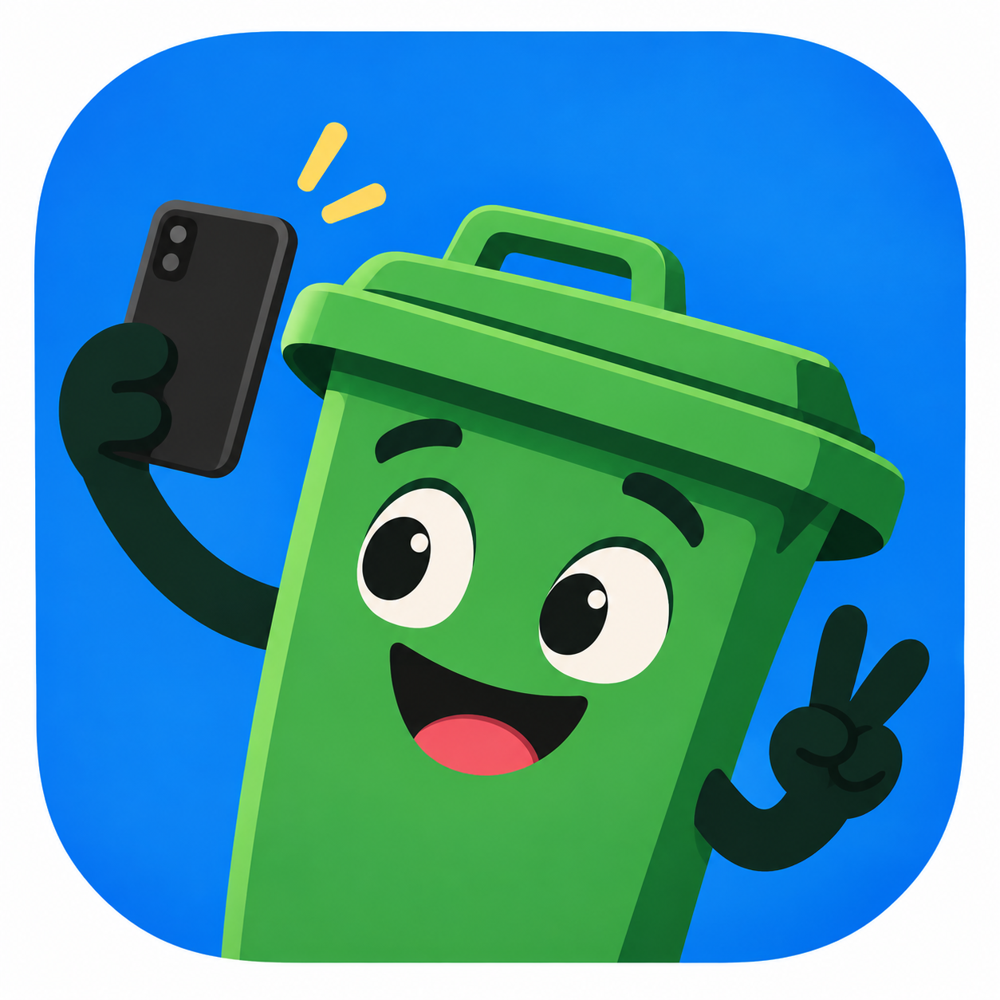

The only influencer worth following.
It's 6:58am. You're at the kerb in your dressing gown, holding a bin, wondering if it's blue week or green week. Your neighbour's bin is out. Is that a clue, or a trap?
Binfluencer ends the guesswork. It tells you which bin goes out next, and reminds you the night before. That's it. That's the content.
Bincent is our mascot: a green wheelie bin with a phone, a winning smile and very strong opinions about pizza boxes. He's the only influencer whose content is literally rubbish, and he's proud of it. He changes colour to match whichever bin is going out, because he's a professional.
Yes. Binfluencer shows the occasional small advert to keep the lights (and the servers) on. Unlike other influencers, we promise never to pretend an advert is our honest opinion about bins.
Argyll and Bute (Helensburgh included), the Highlands (from Inverness and Fort William to Dingwall and beyond), Aberdeen, Glasgow, West Lothian, Edinburgh and Inverclyde. Seven councils, a lot of bins. Every influencer starts small. We add new councils every week, and the ones with the most votes go first. If we don't cover yours yet, search your postcode in the app anyway: it counts as a vote (one per phone, this is not a rigged election). Tap "Tell me when it arrives" and Bincent will let you know the moment your council goes live. Then get your family, friends and group chat to vote too. Campaigning has never been so smelly.
The small print, but friendly. Binfluencer is an independent app, not run by or affiliated with any council. Collection dates come from what councils publish. If your council says one thing and we say another, believe the council. They own the lorries.
Fancy fewer calls asking "when's my bin day?". You can send us your collection data directly, holiday changes and all, so your residents always see the official dates. It's a simple API, and there's a spreadsheet option if you'd rather not build anything. Read the guide for councils.
We don't want your data. We barely want your postcode, and only to find your bins. No account, and your addresses and reminders stay on your phone. The small adverts come from Google AdMob, and you get to choose whether they're personalised. The grown-up version is in our Privacy Policy.
Questions, feedback, bug reports or bin-related confessions: lookbehindyousoftware@gmail.com.